A round tray does more for a room than its size suggests. It gathers loose objects, a candle, a stack of books, a small vase, into one deliberate moment, and the circular shape softens whatever hard edges sit nearby, whether that's a square coffee table or a boxy console.
It also travels well between rooms. The same tray that organizes a coffee table can just as easily anchor a bathroom vanity, a nightstand, or an outdoor side table, which makes it one of the more flexible styling tools in a home.

18 Round Tray Decor Ideas
1. Home Office Desk Round Tray
A desk needs clear boundaries, and a round tray is a simple way to separate actual work tools from the small personal items that tend to pile up nearby.
Keeping the desk tray minimal, a small plant, a pen holder, maybe a candle for after-hours, adds a bit of warmth without becoming its own distraction.
It's a small addition, but it makes a noticeable difference in how calm, or cluttered, a desk feels during an actual workday.
2. Shelf Styling With a Round Tray
Open shelving needs some kind of grounding element or it starts to feel floaty, and a round tray gives a shelf real structure and depth.
Placing the tray toward the back of the shelf, then layering smaller items forward in front of it, lets the tray act as a visual anchor for everything else nearby.
The round shape also breaks up the straight lines a shelf usually has, pulling the whole arrangement together in a way flat, ungrounded shelf styling rarely manages on its own.
3. Bar Cart Round Tray
Bar carts turn chaotic fast once bottles, glasses, and tools start competing for space, and a round tray creates order without draining the fun out of it.
Treating the tray as its own small moment within the cart, grouping a decanter, a few glasses, and a small garnish dish together, keeps everything from looking scattered.
It makes the whole cart read as curated rather than cluttered, which is really the difference between a bar cart that looks intentional and one that just looks messy.
4. Neutral Round Tray That Never Gets Old
When in doubt, a soft neutral palette on a round tray is close to a guaranteed win in almost any room.
Cream, beige, warm wood, and a touch of brass work in almost any room and almost any season, which makes a neutral tray one of the easiest styling decisions to make and then forget about.
It adapts to nearly anything placed nearby, and it rarely feels dated the way a more trend-driven color palette eventually does.
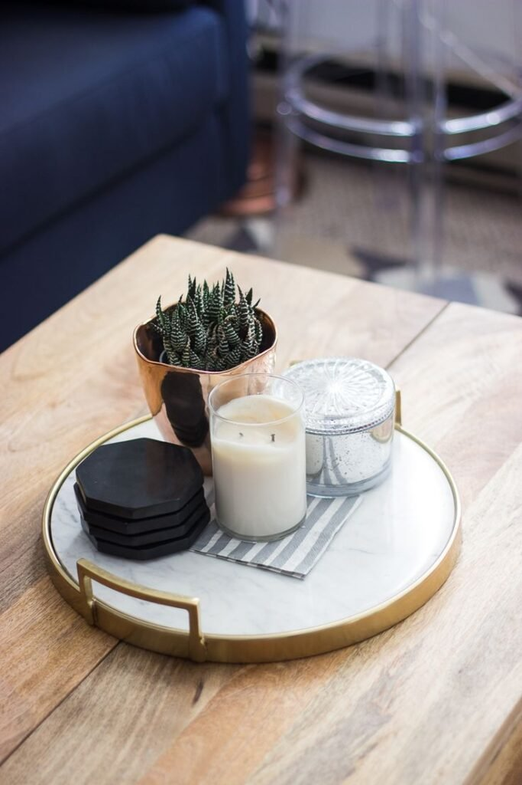
5. Layered Round Tray for Statement Style
For anyone drawn to bolder decor, a round tray can go genuinely dramatic once it's layered with real intention.
Combining a taller sculptural piece, a stack of oversized books, and something with real texture, a dried arrangement, a patterned object, builds genuine visual weight.
Balance still matters even in a bold layout, so the tray holds the drama together instead of letting it feel random or overdone.
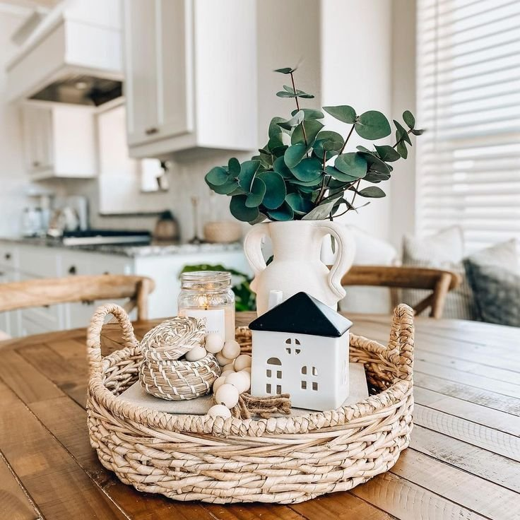
aboxoo Thinker Statue Abstract Art Figurine, Gold
Shop on Amazon6. Vanity Table Round Tray
A vanity table clutters up quickly once skincare, makeup, and jewelry all start competing for the same surface.
Grouping daily essentials onto one round tray keeps the chaos contained while still looking pretty, a perfume bottle, a small dish for rings, a brush or two is usually enough.
Everything feels more intentional once it's gathered rather than scattered, and getting ready tends to feel more enjoyable in a space that actually looks put together.
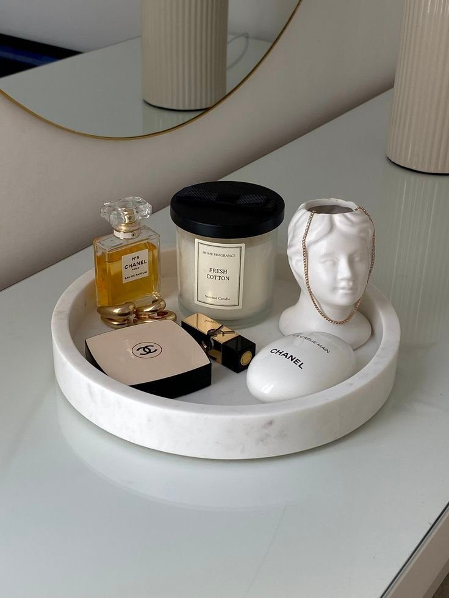
7. Dining Table Round Tray for Everyday Style
A dining table doesn't need a full formal tablescape to look pulled together on a random weeknight.
A round tray with a low-profile arrangement, a short vase, a candle, a small plant, works well for everyday use, since anything too tall gets in the way when plates start getting passed around.
The tray anchors the table without demanding attention, and it keeps the table looking styled even on nights when it isn't formally set.
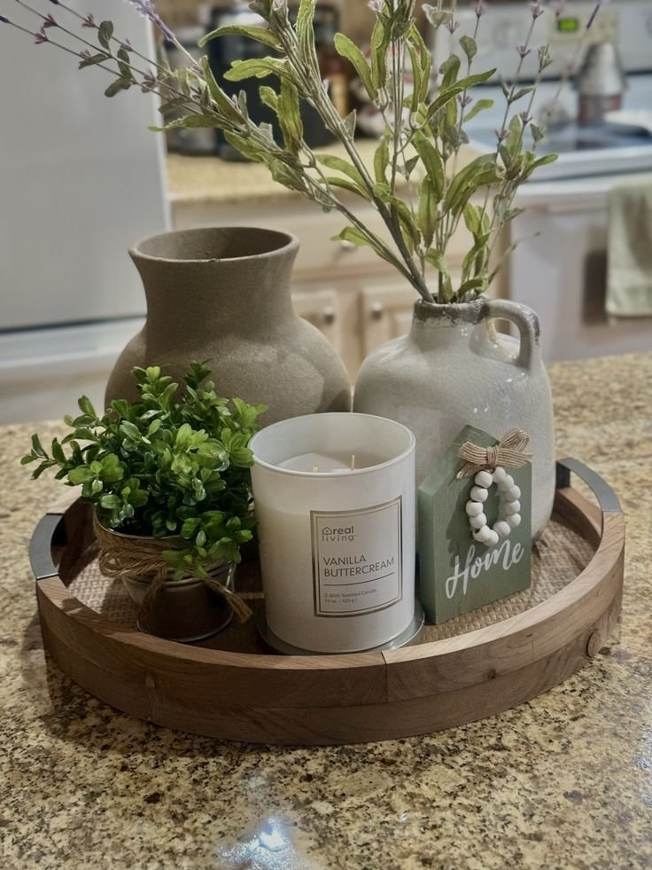
8. Bedroom Nightstand Round Tray
Nightstands clutter up fast, and a round tray helps control that mess without making the space feel sterile or overly staged.
Keeping it soft and minimal, a small lamp, a candle, a book, maybe a tiny dish for rings, is really all a nightstand tray needs.
The round shape softens the edges of what's usually a boxy nightstand, and it keeps the surface from feeling crowded during a half-asleep morning routine.
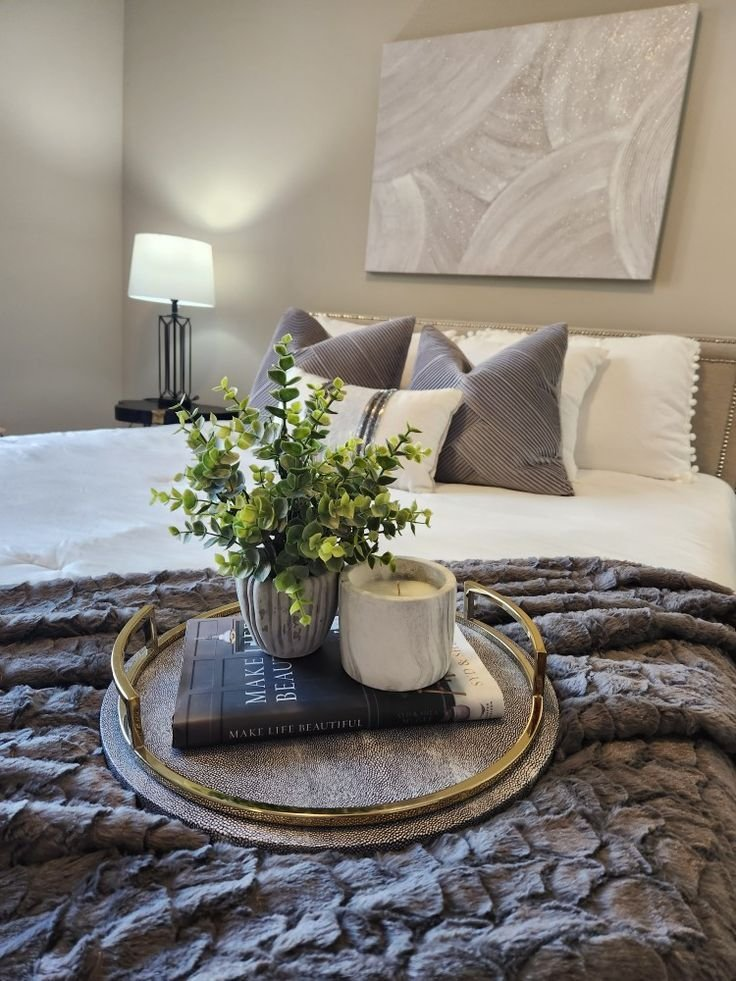
9. Bathroom Counter Corner Round Tray
Corners get ignored constantly, especially in a bathroom, and a round tray is a simple trick for turning a dead corner into a styled moment.
Keeping the tray fairly light, a small soap dispenser, a rolled hand towel, one plant, avoids overloading what's usually a tight amount of counter space.
The tray adds a bit of polish without actually taking up much room, which keeps the whole space feeling clean, calm, and considered rather than cluttered.
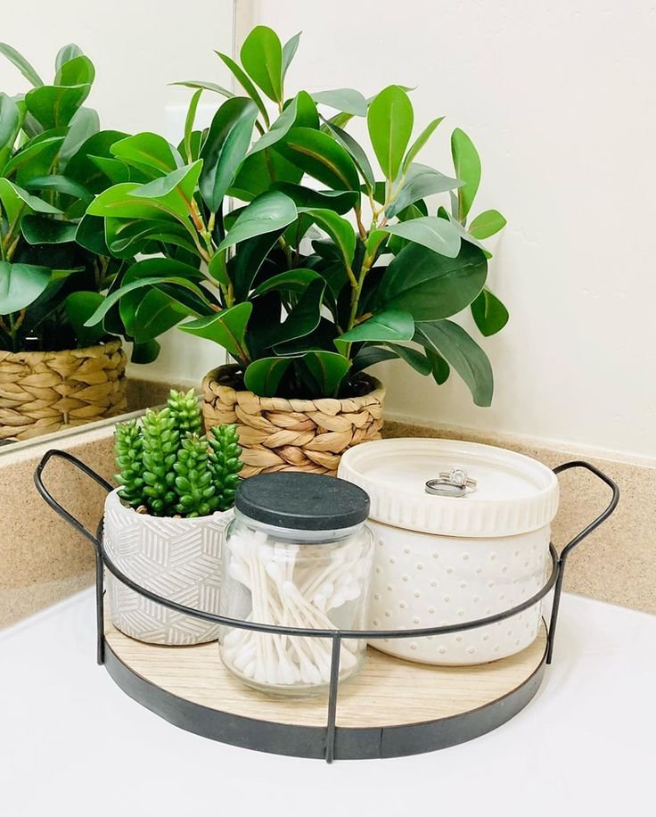
10. Kitchen Counter Round Tray
Kitchen counters deserve better than random clutter, and a round tray creates a clear visual zone, especially useful in an open layout where everything tends to blend together.
A small vase, a candle, maybe a stack of cookbooks or a cutting board leaned upright, grouped onto one tray, keeps the counter from feeling like a catch-all.
It stays neat without feeling sterile, and a kitchen styled this way reads warmer than one with everything just set directly on the counter.
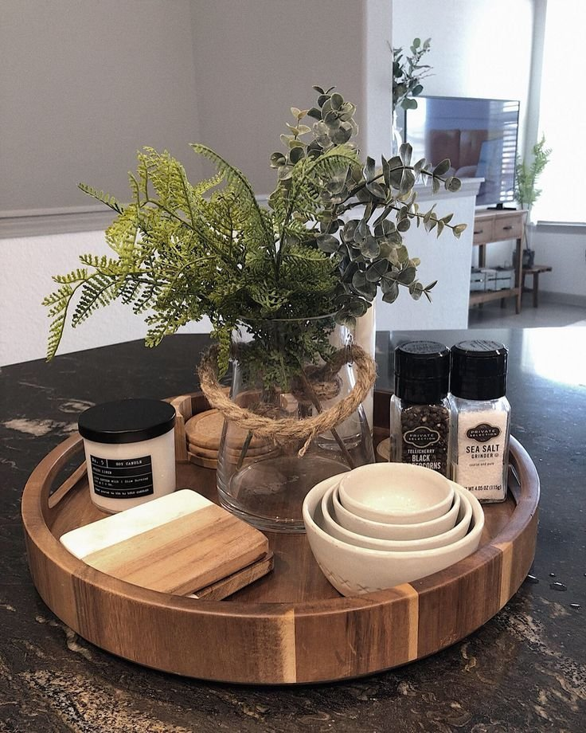
11. Ottoman Round Tray That Feels Intentional
An ottoman sits right at the edge between decor and function, and a sturdy round tray is what makes it work as both at once.
A stack of books, a candle, and something textured, dried flowers, a small sculptural object, fills the tray without making the ottoman feel overloaded.
The ottoman still functions as a footrest or extra seat when needed, but the tray keeps it from looking bare the rest of the time, a genuinely practical compromise.
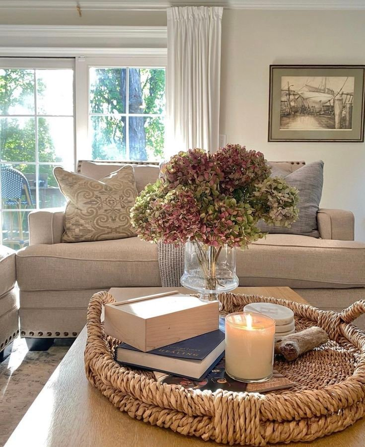
12. Outdoor Table Round Tray
Round trays work outside just as well as they do indoors, and they turn a patio or balcony table from forgotten into genuinely styled.
Sticking to weather-resistant items, a lantern, a faux succulent, a stone or ceramic object that won't warp in the rain, keeps the display from needing constant upkeep.
The tray also keeps everything contained even on a breezy day, which loose tabletop decor outdoors almost never manages on its own.
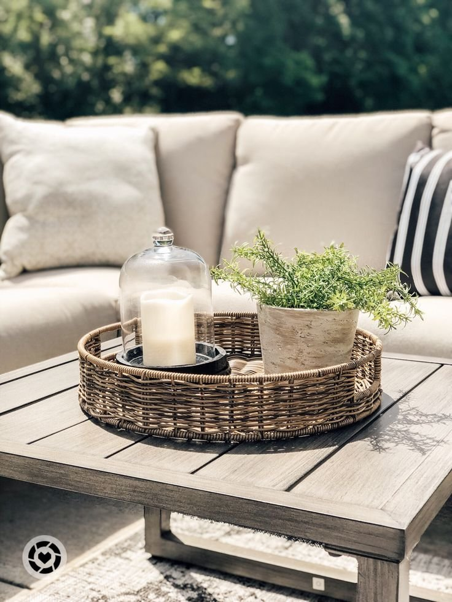
13. Console Table Round Tray
A console table needs some kind of structure or it starts to look forgotten, and a round tray anchors that styling especially well in a long hallway or behind a sofa.
Placing the tray slightly off-center, then layering the rest of the console's decor around it, keeps the whole arrangement from feeling too rigid or symmetrical.
The round shape also breaks up all the straight lines a console table usually has, which adds a bit of visual flow a tray-free console tends to be missing.
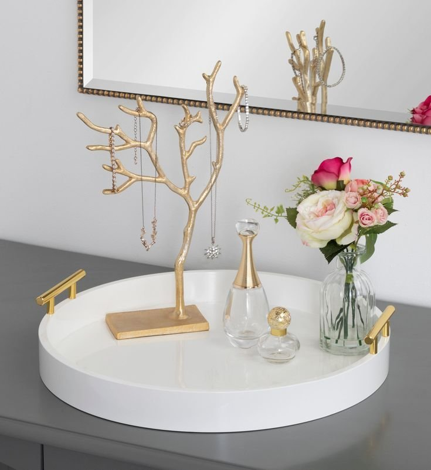
14. Minimal Round Tray for Small Spaces
Round trays genuinely shine in tight spaces, since the circular shape takes up far less visual room than a rectangular one, even at the same footprint.
Keeping it to two or three items at most, and letting the tray itself do most of the visual work, is what keeps a small apartment or compact room from feeling overdecorated.
A single candle, a small plant, and one object with a bit of shape is usually plenty, proof that a small space can still look genuinely styled without being crowded.
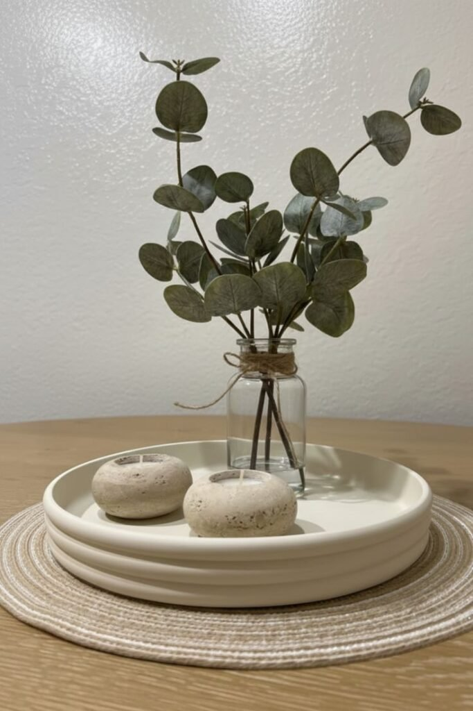
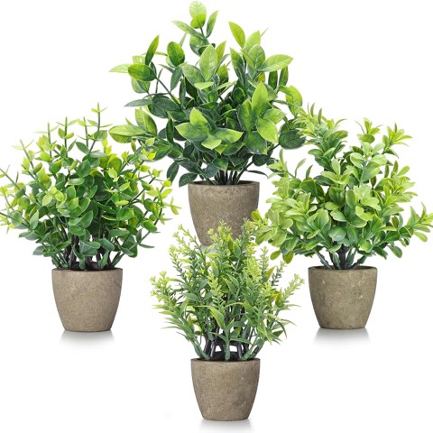
Mini Artificial Greenery Potted Plants, 4 Pack, for Bathroom and Shelves
Shop on Amazon15. Seasonal Round Tray Decor
This is arguably where a round tray earns its keep the most, swapping what's on it is a fast, affordable way to refresh a room for a new season.
Keeping the tray itself neutral and rotating only the decor on top of it, pumpkins and foliage in fall, greenery and candles in winter, fresh blooms in spring, means one tray can carry a room through the whole year.
It's one of the lowest-effort ways to make a space feel seasonally updated without redoing the room's actual styling each time.
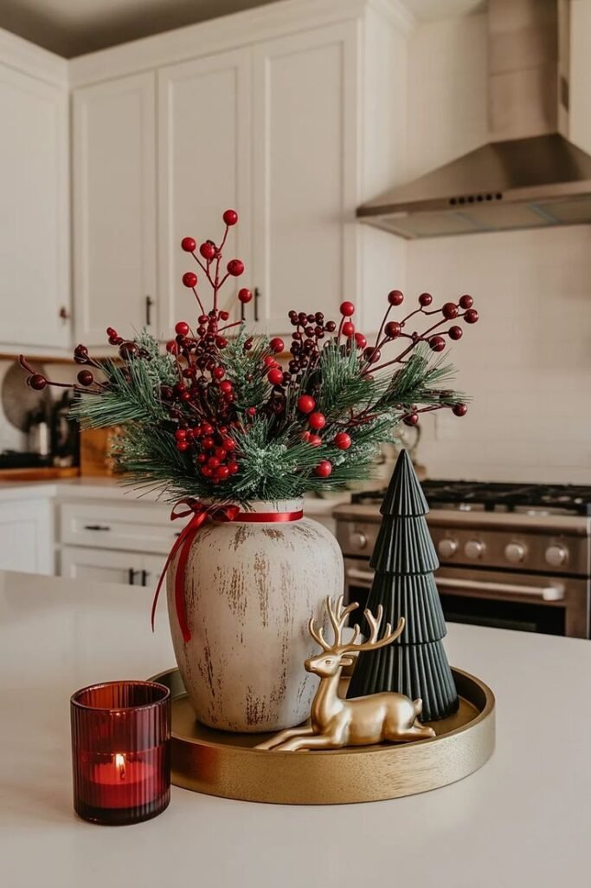
16. Coffee Table Centerpiece
The coffee table is the classic home for a round tray, and it earns that reputation honestly, it organizes what would otherwise be clutter without killing the room's vibe.
A candle, a stack of books, something with a bit of texture like a sculptural object or small vase of greenery, grouped together rather than spread loose across the table, is the whole idea.
The tray pulls everything into one visual moment and keeps the rest of the table surface usable for an actual drink or a plate, which loose decor rarely allows for.
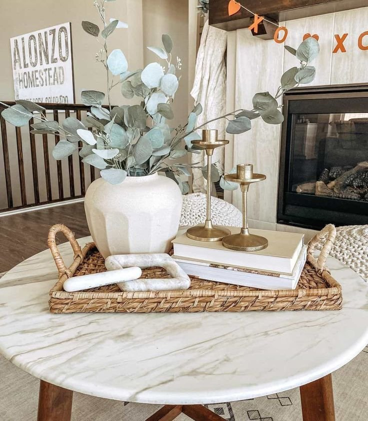
17. Bathroom Vanity Round Tray
A bathroom feels instantly more elevated with the right tray on the vanity, even in a small powder room or guest bath.
Everyday items, hand soap, a small candle, lotion, a tray of folded hand towels, still look intentional once they're grouped inside a round tray rather than scattered across the counter.
It keeps the vanity organized without feeling precious, and it's the easiest way to make a bathroom feel like it belongs in a boutique hotel rather than a rushed morning routine.
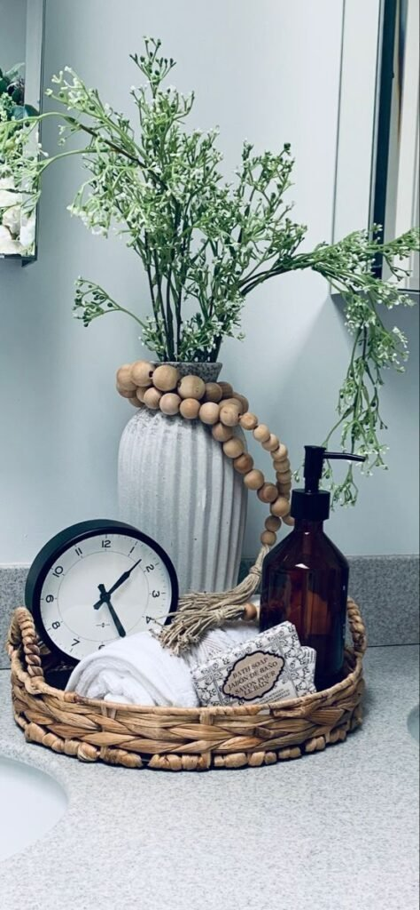
18. Entryway Round Tray That Actually Helps
Entryways get messy fast, and a round tray placed near the door is one of the simplest fixes for the daily scramble to find keys.
Mixing style with function matters most here, a small dish for keys, a stack of mail, maybe a candle, all fitting comfortably within the tray's edge.
It keeps the small essentials contained instead of scattered across a console, and it sets a welcoming tone the moment someone walks in the door.
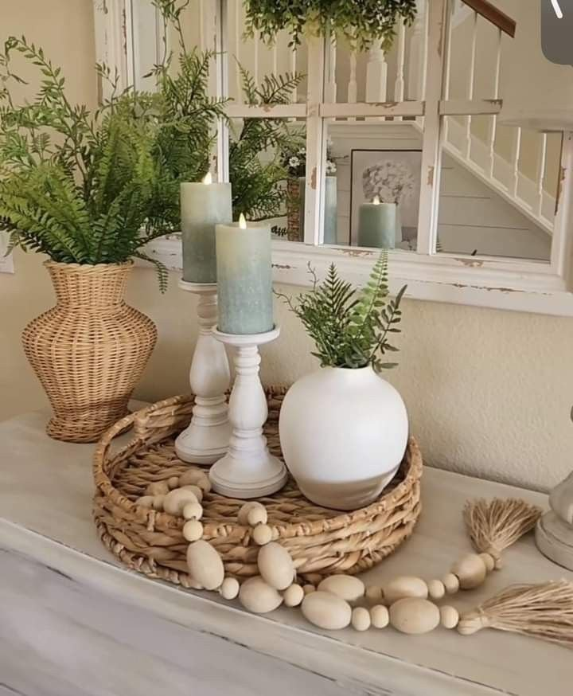
Choosing and Styling a Round Tray
Material matters more than most people expect. A woven or natural-fiber tray leans relaxed and textural, while a lacquered wood or marble tray reads more polished and formal, picking one that matches the room's existing materials keeps it from looking like an afterthought.
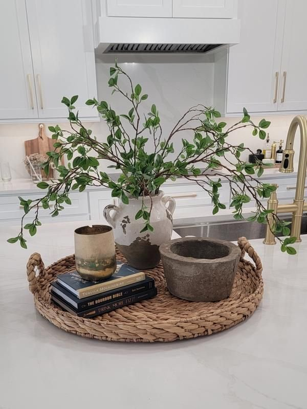
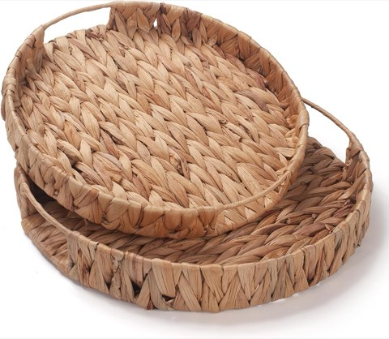
Round Water Hyacinth Ottoman Serving Trays with Handles, Set of 2, 11.8 Inch
Shop on AmazonOnce the tray itself is chosen, the styling part is simple: pick a focal point first, usually something with height, like a candlestick or a small vase, then fill in around it with two or three supporting pieces instead of a tray's worth of knickknacks. If a setup still feels off once it's styled, that instinct is usually right, and it's worth pulling one piece back out.
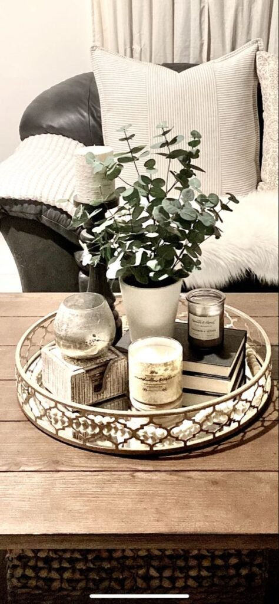
Round Wood Tray for Ottoman and Coffee Table, 11.8 Inch, Large
Shop on AmazonCeramic Taper Candle Holder with Tray Base
Shop on AmazonFinal Thoughts
A round tray is one of the lowest-effort, highest-impact styling tools a home can have, it works on nearly every surface, in nearly every room, and it adapts the moment the decor on top of it changes.
Starting with one strong focal point, keeping the rest of the items to a small, intentional group, and resisting the urge to overfill it is really the entire formula, no matter which room in the house the tray eventually ends up living in.